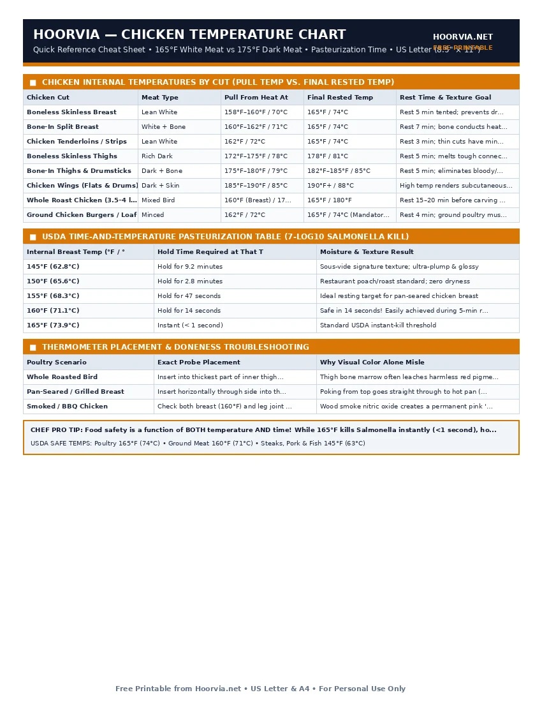

Chicken Internal Temperature Chart (White vs Dark Meat Guide)
Every kitchen chart repeats '165°F for chicken,' yet cooking every part of the bird to 165°F leaves breasts chalky and drumsticks rubbery. True poultry mastery comes from separating lean white meat (which peaks at 160°F–165°F) from collagen-rich dark meat (which doesn't turn silky and tender until 175°F–185°F).
| Chicken Cut | Meat Type | Pull From Heat At | Final Rested Temp | Rest Time & Texture Goal |
|---|---|---|---|---|
| Boneless Skinless Breast | Lean White | 158°F–160°F / 70°C | 165°F / 74°C | Rest 5 min tented; prevents dry stringiness |
| Bone-In Split Breast | White + Bone | 160°F–162°F / 71°C | 165°F / 74°C | Rest 7 min; bone conducts heat into center |
| Chicken Tenderloins / Strips | Lean White | 162°F / 72°C | 165°F / 74°C | Rest 3 min; thin cuts have minimal carryover |
| Boneless Skinless Thighs | Rich Dark | 172°F–175°F / 78°C | 178°F / 81°C | Rest 5 min; melts tough connective tissue |
| Bone-In Thighs & Drumsticks | Dark + Bone | 175°F–180°F / 79°C | 182°F–185°F / 85°C | Rest 5 min; eliminates bloody/pink joints |
| Chicken Wings (Flats & Drums) | Dark + Skin | 185°F–190°F / 85°C | 190°F+ / 88°C | High temp renders subcutaneous wing fat crisp |
| Whole Roast Chicken (3.5–4 lb) | Mixed Bird | 160°F (Breast) / 175°F (Thigh) | 165°F / 180°F | Rest 15–20 min before carving so juices settle |
| Ground Chicken Burgers / Loaf | Minced | 162°F / 72°C | 165°F / 74°C (Mandatory) | Rest 4 min; ground poultry must reach 165°F |
| Internal Breast Temp (°F / °C) | Hold Time Required at That Temp | Moisture & Texture Result |
|---|---|---|
| 145°F (62.8°C) | Hold for 9.2 minutes | Sous-vide signature texture; ultra-plump & glossy |
| 150°F (65.6°C) | Hold for 2.8 minutes | Restaurant poach/roast standard; zero dryness |
| 155°F (68.3°C) | Hold for 47 seconds | Ideal resting target for pan-seared chicken breast |
| 160°F (71.1°C) | Hold for 14 seconds | Safe in 14 seconds! Easily achieved during 5-min rest |
| 165°F (73.9°C) | Instant (< 1 second) | Standard USDA instant-kill threshold |
| Poultry Scenario | Exact Probe Placement | Why Visual Color Alone Misleads |
|---|---|---|
| Whole Roasted Bird | Insert into thickest part of inner thigh without touching bone | Thigh bone marrow often leaches harmless red pigment at 170°F |
| Pan-Seared / Grilled Breast | Insert horizontally through side into thickest center lobe | Poking from top goes straight through to hot pan (+25°F error) |
| Smoked / BBQ Chicken | Check both breast (160°F) and leg joint (180°F) | Wood smoke nitric oxide creates a permanent pink 'smoke ring' |
Printable Cheat Sheet Preview (US Letter & A4)
High-contrast, ink-saving layout designed for kitchen binders, grill stations, and refrigerator doors. No sign-up required.

Why Chicken Breast Dries Out at 165°F While Thighs Need 180°F
A whole chicken is two completely different meats attached to one frame. Understanding the structural difference between pectoral flight muscles (white meat) and leg locomotion muscles (dark meat) transforms how you cook poultry:
1. The Physics of Lean Chicken Breast (Pull at 158°F–160°F)
Chicken breast is composed of fast-twitch muscle fibers with virtually zero intramuscular fat or collagen. Between 140°F and 155°F, the muscle proteins denature gently. Once the internal temperature crosses 165°F on the stove, carryover heat pushes the breast to 172°F+ on the plate—squeezing out cellular water like a wrung sponge. By pulling breasts at 158°F–160°F and tenting with foil for 5 minutes, carryover heat glides to 164°F–165°F and holds past the 14-second pasteurization mark without losing moisture.
2. The Collagen Secret of Dark Meat (Cook to 175°F–185°F)
Chicken thighs, drumsticks, and wings work constantly, packing them with myoglobin, fat, and tough connective tissue (collagen). If you pull a chicken drumstick at 165°F, it is technically safe to eat, but the unmelted collagen makes the meat chewy, stringy, and unpleasantly bloody-looking around the joint. Heating dark meat to 175°F–185°F (79°C–85°C) converts that stubborn collagen into rich, velvety gelatin that coats every fiber.
Frequently Asked Questions
Why is my cooked chicken still red or purple right next to the bone?
Young broiler chickens have porous, immature bones. During freezing or cooking, purple bone marrow pigment seeps through the bone into surrounding meat. As long as your thermometer reads 165°F+ (or 175°F in drumsticks), the red pigment near the bone is 100% safe.
How do I get a whole roast chicken to hit 160°F in the breast and 180°F in the thighs at the same time?
Use one of three pro techniques: (1) Spatchcock (butterfly) the bird so the legs lie flat and exposed to higher oven heat, (2) Ice the breast by placing a bag of ice cubes on the breast for 20 minutes before roasting, or (3) Shield the breast with a triangle of aluminum foil for the first 25 minutes.
What causes 'woody' crunchy chicken breasts?
Woody breast is a muscle abnormality in fast-growing commercial chickens where muscle fibers harden. Buying smaller 5–6 oz air-chilled breasts or pounding thick breasts gently to an even 3/4-inch thickness prevents rubbery texture.
Meat & Poultry Temperature Reference Series
Frequently Asked Questions (FAQs)
Why is my cooked chicken still red or purple right next to the bone?▼
Young broiler chickens have porous, immature bones. During freezing or cooking, purple bone marrow pigment seeps through the bone into surrounding meat. As long as your thermometer reads 165°F+ (or 175°F in drumsticks), the red pigment near the bone is 100% safe.
How do I get a whole roast chicken to hit 160°F in the breast and 180°F in the thighs at the same time?▼
Use one of three pro techniques: (1) Spatchcock (butterfly) the bird so the legs lie flat and exposed to higher oven heat, (2) Ice the breast by placing a bag of ice cubes on the breast for 20 minutes before roasting, or (3) Shield the breast with a triangle of aluminum foil for the first 25 minutes.
What causes 'woody' crunchy chicken breasts?▼
Woody breast is a muscle abnormality in fast-growing commercial chickens where muscle fibers harden. Buying smaller 5–6 oz air-chilled breasts or pounding thick breasts gently to an even 3/4-inch thickness prevents rubbery texture.